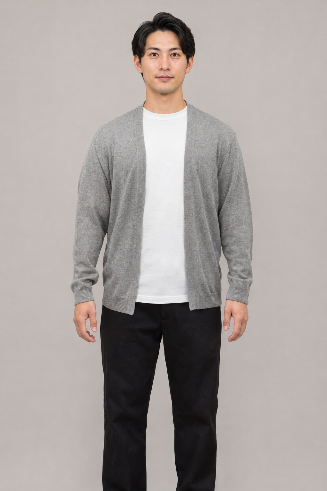
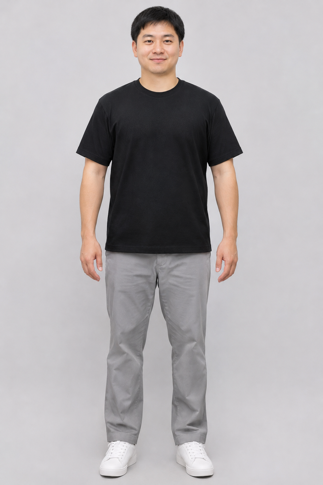

鈴木さん専用 ／ 2026-11-13 ／ 主役・補助役の2名を画像指定・v2Noob vs Pro vs Hacker：梱包を全編再現
左が参考、右が試作です。主役と補助役、それぞれ別の人物画像を全3区間に指定した約35秒の試作です。小・中・大の箱を梱包する流れを再現。右側の試作を見ながら、顔・服装・手の動きを比較できます。
指定した2名の人物画像を見る

主役A：グレーのカーディガン
補助役B：短髪・黒Tシャツ参考リール指定人物を使った試作
共通の見出し：How to ship Japanese TCG
日本のトレーディングカードを発送する方法
今回の変更：2人とも人物画像を指定
主役Aはグレーのカーディガン、補助役Bは短髪・黒Tシャツ。全3区間に2枚の人物画像を同じ順序で渡しました。最初は主役1人、その後は主役が左・補助役が右に並び、商品を詰めて箱を閉じます。終盤のテープ作業は右の補助役が担当します。
- 旧版の前半にあった広いぼかしは改善。元の店名・ロゴを除く範囲と、字幕を除く時間を絞って再生成しました。
- 英語テロップは元の内容・時刻・位置を基準に合成しています。前半に生成された上部見出しは除去して、全編共通の見出しを重ねました。
- 24.73秒付近は別々に生成した映像の接続です。箱のふた・手・商品の位置に不連続が残ります。14.73秒付近にも人物や箱の状態の差があります。
- 顔は指定画像を参照していますが、顔の向きや表情、手指、商品数・絵柄、梱包動作の細部は完全一致ではありません。指定画像は上の欄で開けます。
- 試作の音は別制作のインストBGMと梱包SEです。元の楽曲・歌声は再現していません。説明ナレーションは元動画にないため追加していません。
生成費用：合計 $5.60（ツールの固定換算で約892円）。日次上限は発注後に2,000円へ復元済み。旧版は別フォルダに保持しています。
参考側の固定表示「SAMURAI SWORD」「FROM JAPAN TO THE WORLD」は、参考店名と「日本から世界へ」の意味です。試作では表示しません。歌詞の翻訳ではなく、画面の英語テロップの訳を掲載しています。
全編の英語と日本語訳
参考側の店名・ロゴ・原音は比較用に保持。試作側では除去しています。人物・倉庫・梱包は生成による再現で、自社の実在庫や発送実績を示す記録ではありません。